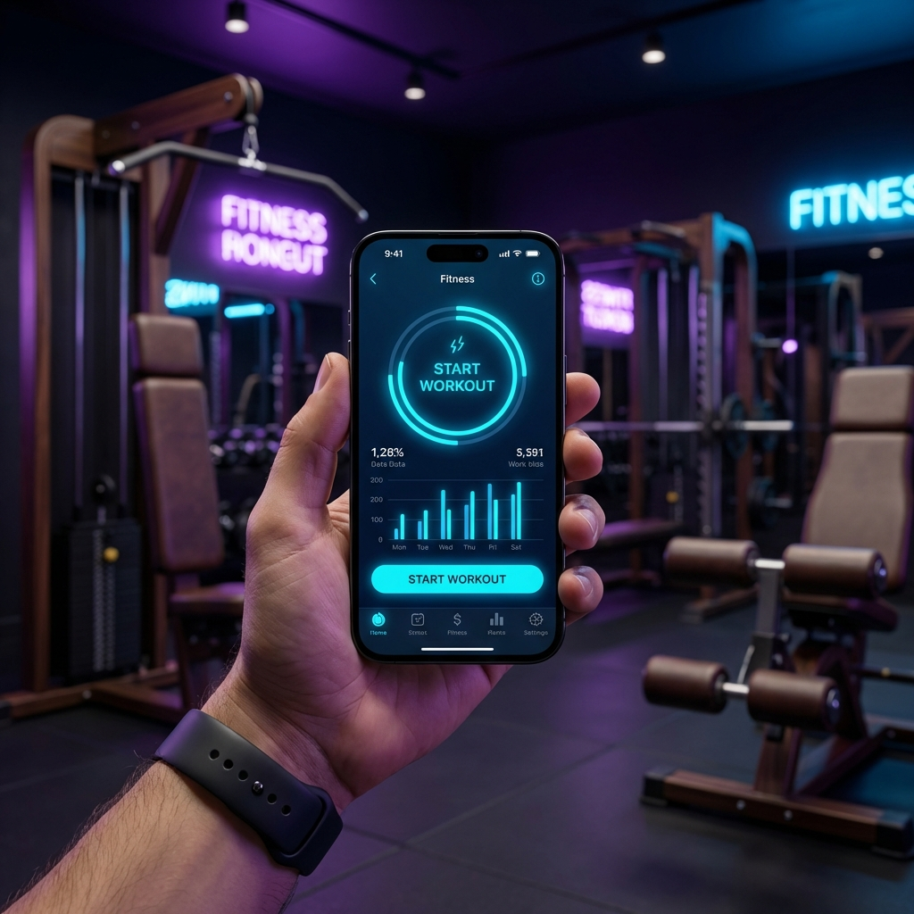
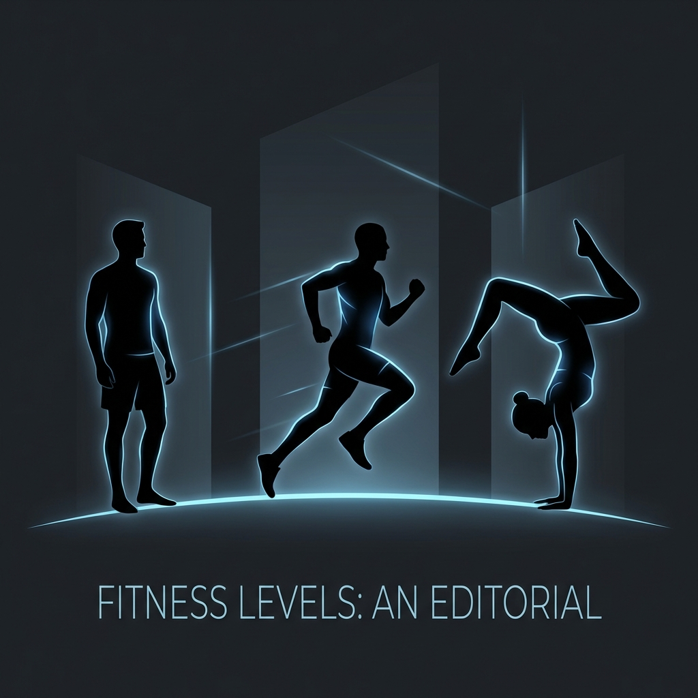
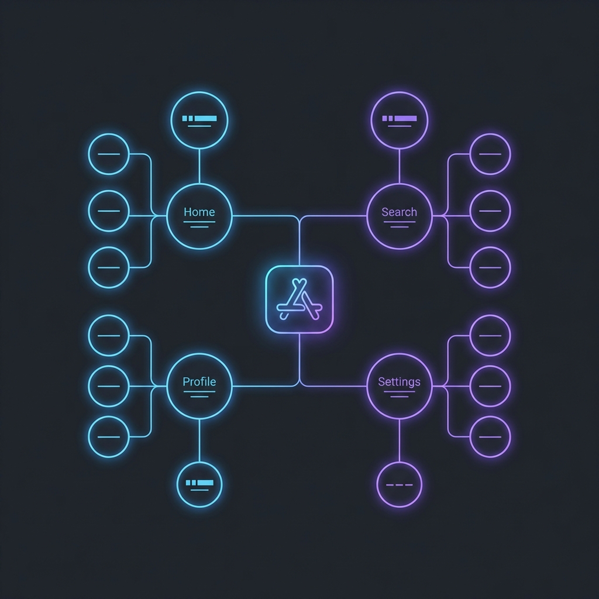
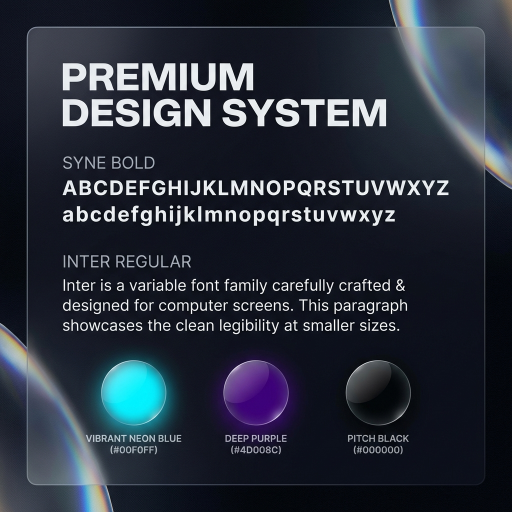

VYAYAMA

THE ABANDONMENT LOOP
Traditional fitness apps fail because gyms are unpredictable. Our research showed that 90% of users churn within 6 months because their apps can't handle real-world friction like crowded equipment or fluctuating energy levels.
DEFINE
Identifying equipment flexibility as the #1 driver of retention.
RESEARCH
Analyzing 50+ user interviews to map the "Corstisol Spike" in busy gyms.
IDEATE
Concepting a Just-In-Time (JIT) AI generation architecture.
DESIGN
High-fidelity system based on performance-utility aesthetics.
THE ARCHETYPES

THE PLATEAUD PRO
"I've been lifting for 5 years. I know what to do, but I'm bored of my routine and I don't have time to manually plan progression."
Goal: Automatic progressive overload without manual math. Pain: Hits walls because static apps don't adjust to their fatigue.
THE TRAVELING WARRIOR
"I'm in a different hotel gym every week. Half the time they don't have a rack. My current app just breaks when that happens."
Goal: Consistency anywhere. Pain: Equipment scarcity leads to broken streaks and loss of motivation.
INFORMATION DESIGN
We moved away from "static buckets" to a centralized **Decision Logic** where user memory and real-time environment data collide.

VISUAL IDENTITY
Optimized for high-adrenaline, low-light environments. High contrast, aggressive typography, and glassmorphism depth.

ADAPTIVE
DASHBOARD
The core hub for progress. Instead of showing the "Month," we show "The Arch"—a visualized progression line that motivates the user toward their specific North Star.
UX RATIONALE: JIT GENERATION
By only generating the daily workout 5 minutes before the session starts, we account for the user's latest recovery metrics and prevent "The Intimidation Factor" of seeing a rigid 30-day block.

MULTI-MODAL
COACHING
A friction-killing interface. The user can ask questions or upload photos of equipment they don't recognize. The AI interprets the gym floor in real-time.
UX RATIONALE: THE MAGIC MOMENT
The "Photo-to-Reroute" feature addresses the 42% equipment friction statistic. It turns a potential "abandonment point" into a "success point" through instant AI-driven adaptation.

JOURNEY TO FLOW
| PHASE | USER ATTITUDE | LEGACY APPS | VYAYAMA |
|---|---|---|---|
| ENTRY | "Am I doing this right?" | Generic templates. | AI-Personalized Loadout |
| SESSION | "The rack is taken." | Session abandonment. | JIT Equipment Rerouting |
| RECOVERY | "I'm too sore for tomorrow." | Rigid schedule. | Adaptive Fatigue Adjustment |
THE ROI
By implementing adaptive logic, we projected a 40% reduction in Month-3 churn. The switch from a "Static Tool" to a "Dynamic Partner" created a defensible moat against legacy competitors like MyFitnessPal.
88%
Target Weekly Plan Completion Rate